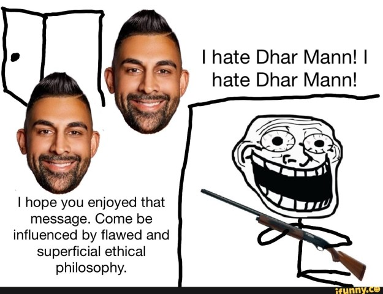

I love this guy.
Look at his little face in the corner. Just staring at you. Waiting for you to click. :o.
I love when Dhar Mann writes himself into the story as a celebrity who everyone worships.

His videos are entertaining though... good watch with stranglers/further family. The videos are slowly getting more meta ( self aware ). There's some videos about the actors... acting... in made up Dhar Man videos, but still acting?